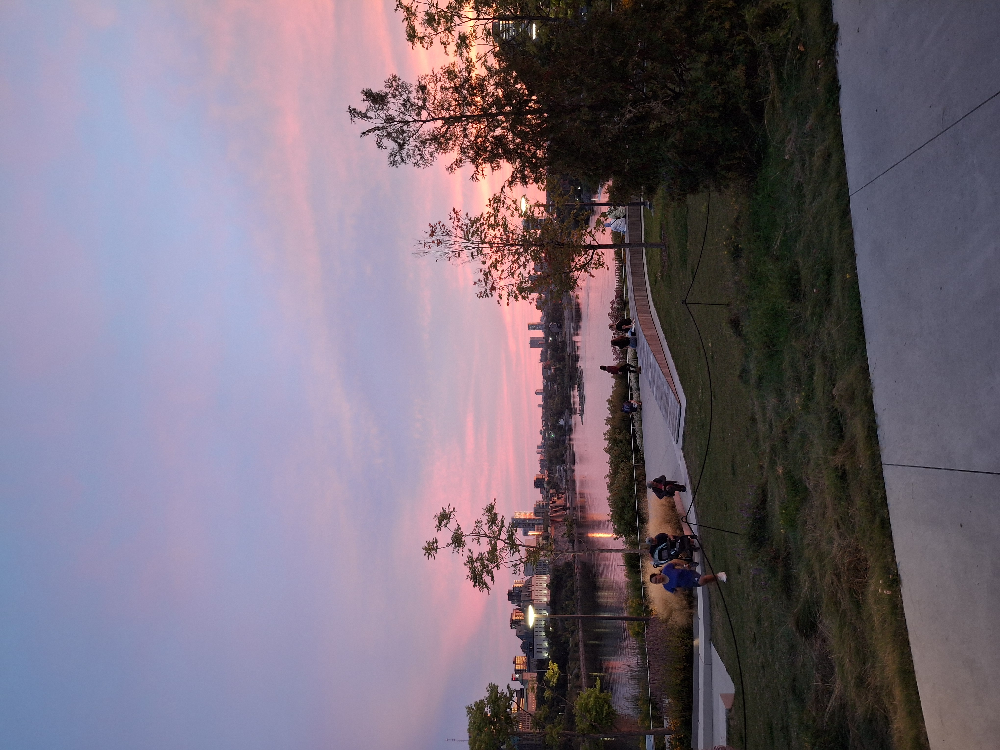

Home
Research
Talks & Events
Teaching
Videos

Videos
Video Links
Torsion of Rational Elliptic Curves over the Cyclotomic Extensions of Q - Fields Seminar
Torsion of Rational Elliptic Curves over the Cyclotomic Extensions of Q - Calgary ANTS
Ömer Avcı | Apollonius Çemberlerinin Genellemesi
Math Talks - Düzlem Geometri Uygulamaları (Ömer Avcı)
Ömer Avcı | Öğrenci Konuşması
Ömer Avcı ile röportaj
ÖMER AVCI - Bardağı Taşırma Oyunu
Tübitak yaz kampı küçük sınıf soru çözümü
Tübitak yaz kampı küçük sınıf soru çözümü-2